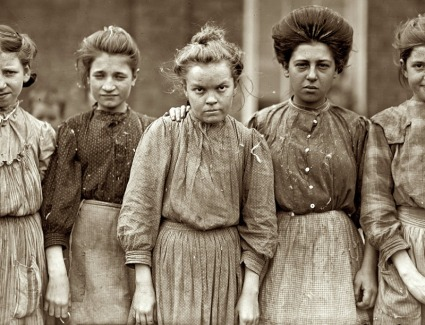

This post is yet to be completed.
Introduction
In Lowell (and many other towns that became industrial capitals overnight) a phenomena called “Chain Immigration” took place. Chain immigration is the process whereby groups emigrating from a place come into a country at the same time. In pre-1890 era, there was no limit on immigrants coming into the US, there were no background checks, no literacy tests, or anything of that manner. By virtue of this, we see racial groups enter in large blocks together, frequently all escaping conditions in their shared country of origin.
Chain Immigration
The process is broken up into three major groups, beginning in 1845, when citizens of Ireland (a colony of England at that time) were one of the first major immigrant groups to enter the US. Seeking refuge from the plight of the Potato Famine (1845 - 1852) in Ireland, a group of more than 1.5 million Irish came to New England, leaving behind more than one million to die from starvation and disease. At this time, New Englanders despised Catholics. Unfortunately, nearly all of the Irish were Catholic or were considered so because of their status as immigrants. Because of this, the Irish were paid less and treated worse. Even if they were offered a position in a mill, the Irish were disallowed from living in most boarding houses, and were forced to live in communities of ‘shanties’, which led to the naming of places in Lowell and Lawrence like “Shanty Pond”.
The following chain link of the immigration process to New England was a large group of English, Scottish, German, and Canadian people around 1855. In contrast to the Irish, a much smaller percentage of this group was fleeing a terrible situation. In fact, many were engineers trained in their countries of origin, and were offered positions that put their technical knowledge to best use. Though this is true, the driving force behind many of the immigrants mentality was the wish to escape the cycle of poverty in their countries of origin. These central and western European groups faced prejudice from New Englanders, but not nearly to the extent of the Irish. Interestingly enough, Canadians were able to assimilate to the New England culture easier than some of rest mainly because Canada had been a colony under British rule as of 1763, and thus a majority of the population spoke English.
By 1876, less than 30 years after its founding, Lowell had already become a full blown city. In this year, the wonders of steam power are discovered and put to use, heightening Lowell’s efficiency and productivity as a city. As Lowell became recognized as a hotbed of textile production, the markets for their products began springing up in South America, China, India, and Russia. This led to another huge population spike for Lowell as it became clear that the supply could be increased and the demand would consistently rise to meet it. (this is from the book)
In 1895, another spike of immigrants was seen in New England, this group was however populated mainly with Southern and Eastern Europeans. In the 1890’s, immigrants are beginning to be processed for the first time. In addition to this, as more and more immigrants flooded into the country, times were changing, and technology improved at a similar rate. Slowly but surely, the role of automation in the textile industry grew, and as it did, so declined the worker’s power.
In 1912, we see the Bread and Roses strikes, a powerful movement following Poleman, Ludlow, Homestead, all of which failed ultimately.
In 1917, a literacy test is added for immigrants, marking a great drop off in the number of immigrants up until the 60s.
In 1960, a law is passed that eliminates the quota system, making the US highly accessible to immigrants. Kennedy is Catholic.
FINISH THIS